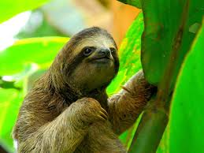

Sloths are a Neotropical group of xenarthran mammals constituting the suborder Folivora, including the extant arboreal tree sloths and extinct terrestrial ground sloths.Noted for their slowness of movement, tree sloths spend most of their lives hanging upside down in the trees of the tropical rainforests of South America and Central America. Sloths are considered to be most closely related to anteaters, together making up the xenarthran order Pilosa.
